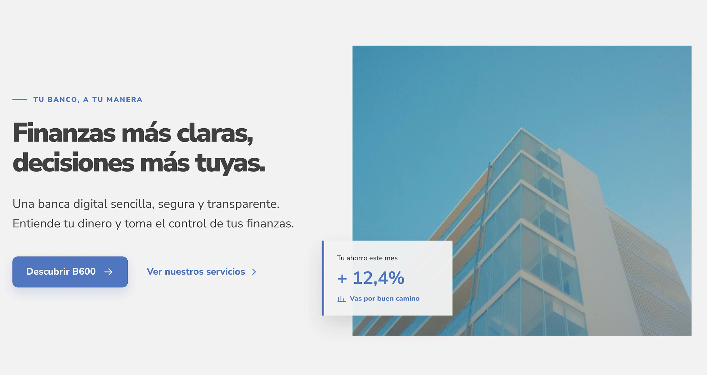

BANCA DIGITAL
Banca B600
Una propuesta para hacer más clara la experiencia bancaria digital.
Conecto investigación, diseño y datos para crear mejores experiencias digitales.
Ver proyectos01 / PERFIL
SOBRE MÍ
Actualmente curso el Máster en UX/UI y Diseño Web en CEI, con formación previa en Programación y Análisis de Datos.
Me interesa investigar las necesidades de las personas y transformar los hallazgos en experiencias digitales útiles.
Conocer mi recorrido ↗02 / SELECCIÓN DE TRABAJO
Selecciona cualquier proyecto para ver su objetivo, las preguntas que guiaron el trabajo, los hallazgos y el resultado.

BANCA DIGITAL
Una propuesta para hacer más clara la experiencia bancaria digital.
EN DESARROLLO
Espacio reservado para un futuro proyecto de mi portfolio.
EN DESARROLLO
Espacio para incorporar un nuevo proyecto a mi portfolio.
03 / HABILIDADES
De comprender el problema a diseñar y evaluar la solución.
Comprender el contexto, las personas y sus necesidades.
Analizar información e identificar patrones y oportunidades.
Transformar los hallazgos en propuestas y experiencias digitales.
Evaluar las soluciones y mejorarlas a partir de los resultados.
04 / CONTACTO